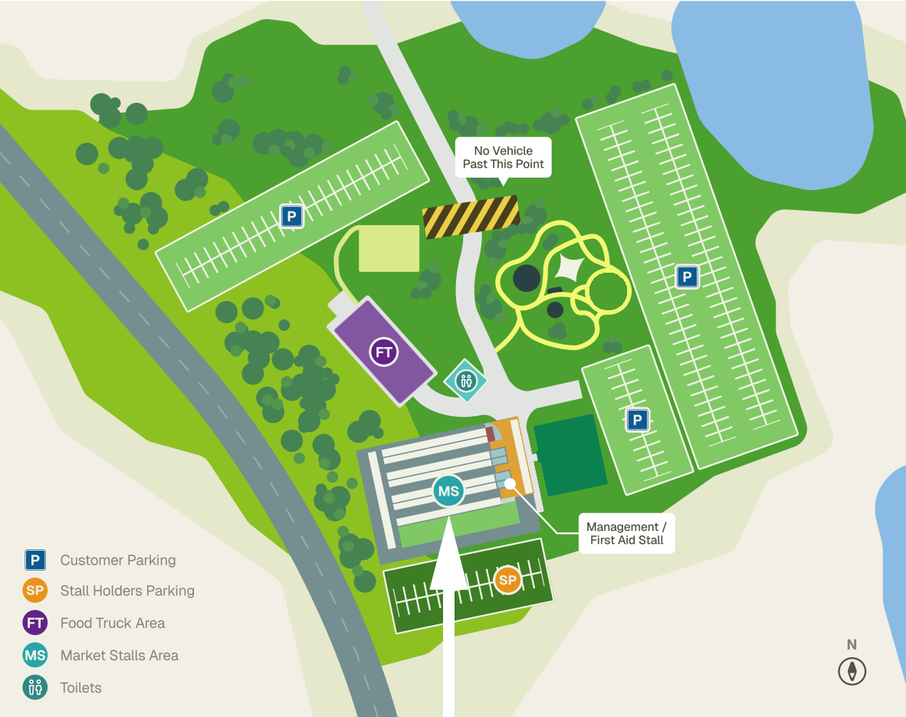
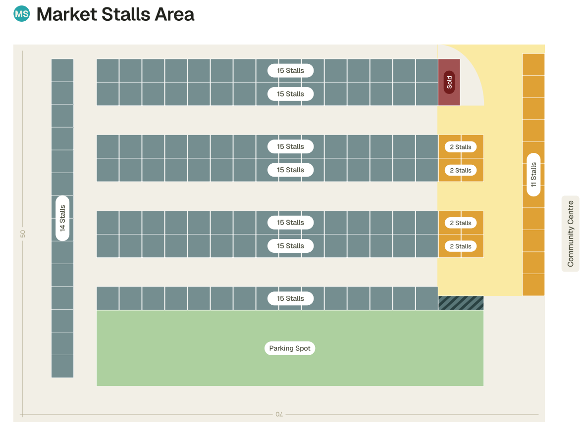

Launching Sunday 5 July 2026 — a brand-new monthly gathering for the Scenic Rim.
The Mundoolun Community Markets is a brand-new monthly market launching at Mundoolun Park on Sunday 5 July 2026. It brings together the best of the local area — growers, makers, plant nurseries and food trucks — on the first Sunday of every month.
We started this because the Scenic Rim has more producers, makers and small food businesses than anywhere else nearby — and they all deserve a place to come together. A place where neighbours run into each other over a coffee, where the kids fill their pockets with strawberries, and where Sunday mornings feel like Sunday mornings used to.
Our vision is bold: a 100+ stall market that becomes the place locals plan their Sunday around. Twelve markets a year, weather permitting. Every dollar spent here stays close to home.

We're building the markets up steadily, with a long-term view. The launch in July 2026 is just the start — over time, we'll grow into a fully established monthly event with more than 100 stallholders.
The Mundoolun Community Markets are about people. About community. About creating opportunities for neighbours to connect, support one another, and enjoy the simple pleasure of spending time together.
Mundoolun is a beautiful rural community — open spaces, fresh air, and a lifestyle many people dream about. From the outside it can look like everyone is doing well. But the reality behind many front doors is often very different. Local families are working harder than ever to keep up with mortgages, bills and the pressures of modern life, and many are quietly dealing with stress, anxiety and loneliness.
One of the biggest challenges facing modern communities is that we are slowly forgetting how to connect face-to-face. Phones, screens and social media fill our evenings, while neighbours who once chatted over the fence can go weeks without speaking. As genuine human interaction decreases, feelings of isolation and disconnection grow.
Strong relationships are built on communication. Strong communities are built on communication.
This is where the markets can make a difference. They create a welcoming space where people can put down their phones, step away from their screens, and reconnect with the people around them. A friendly smile, a coffee shared with a neighbour, or meeting someone new can make a genuine difference to a person's wellbeing — and research consistently shows that social connection is one of the most important factors in positive mental health.
The markets are also about supporting local enterprise. Small businesses are the backbone of rural communities, and the markets give local artists, growers, makers, food vendors and home-based businesses an affordable place to showcase their talents, earn extra income and build confidence. Instead of travelling long distances, locals can enjoy a vibrant community event right on their doorstep — and every dollar spent stays close to home.
A conversation can become a friendship.
A friendship can become a support network.
A support network can change a life.
At their heart, the markets reflect the values that have always made our community special — neighbours helping neighbours, supporting local businesses, creating friendships, and building stronger social connections. Because a strong community isn't built by buildings, roads or infrastructure. A strong community is built by people — and every conversation, every stallholder, every visitor, every volunteer and every smile helps make Mundoolun an even better place to live.

The markets are a private venture — not a council initiative or a volunteer-run committee. That means we make decisions quickly, treat stallholders like partners, and invest directly into making each market day better than the last.
We work closely with Logan City Council on the operating permit and food licensing, and with our stallholders on everything else — from bump-in times to bunting.
Tucked between Tamborine Mountain and the Albert River, Mundoolun sits on the edge of Logan City just inside the Scenic Rim. It's a short drive from Beaudesert, Jimboomba, Tamborine and the Gold Coast hinterland — perfect catchment for a market that draws on the best of the region.
Here's how the day is laid out at Mundoolun Park — from parking, food trucks and toilets, right down to the stall layout in the Market Stalls Area.

